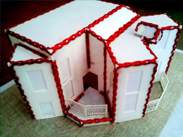
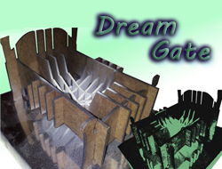
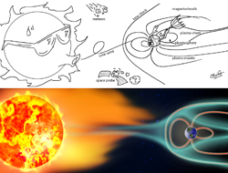
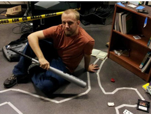

Work
A collection of my artistic work.

Interactive dollhouse made from lasercut acrylic. House would light up based on Arduino sensory input

"Dream Vortex". Lasercut masonite. Model in Rhino converted to connected 2D planes. Glows in the dark!

Images I created for a ham radio magazine article on the ionosphere. Top graphic located in March of 2013 ed of QRP Quarterly, pp 17-18.
Light and Mirrors game. Interactive game projected onto the floor. Students can move mirrors via motion capture to learn about light physics.

Interactive Murdery Mystery. Objects in the scene could be scanned into the computer, which then play an animation from that item's past as clues to solve the murder! Click here to see more about the project (under construction)
Applet
Get in touch
Refer to my résumé and curriculum vitæ.
E-mail me at christopherjosephdean [at] gmail [dot] com